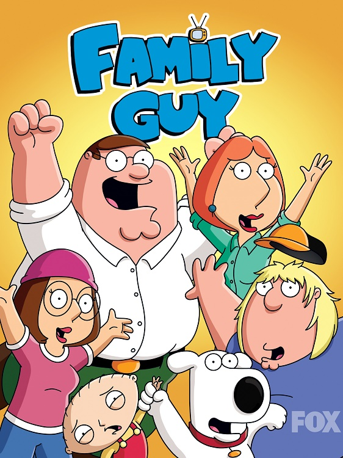

|  |
Il programma ruota attorno alle avventure di Peter Griffin e della sua famiglia che risiede a Quahog, una cittadina immaginaria del Rhode Island. Peter è un operaio incompetente, obeso e ottuso. Il suo comportamento è particolarmente mutevole: a volte è un padre assente e dedito all'alcol che non riesce a farsi rispettare dai propri cari, mentre altre volte, seppur per poco, riesce a svolgere degnamente il ruolo di capo famiglia. Sua moglie Lois Griffin è una bella donna e casalinga discreta e non riesce sempre a essere una buona madre, soprattutto con Meg. È un'insegnante di pianoforte (anche se la si vede praticare quest'attività principalmente nelle prime stagioni) e talvolta dimostra velleità artistiche ed esibisce comportamenti disinibiti.
La coppia ha tre figli: Meg, la tipica ragazza con problemi adolescenziali, perennemente esclusa, derisa e intrappolata in svariate difficoltà relazionali, Chris, un ragazzo obeso, ingenuo e con la passione per il disegno, e l'intellettuale Stewie, un neonato geniale con la passione di armi fantascientifiche e per le macchine del tempo. Insieme con la famiglia Griffin vive anche il cane antropomorfo Brian, il migliore amico di Peter e Stewie che deve fare i conti con i suoi grossi problemi di dipendenza dall'alcol e dalla droga e con l’amore non corrisposto nei confronti di Lois.
Nel corso delle varie stagioni, i membri della famiglia Griffin si sono fatti molti amici: tra i tanti si possono menzionare Glenn Quagmire, Tom Tucker, il giornalista di Channel 5, i vicini di casa Joe e Bonnie Swanson, Joyce Kinney, giornalista sostituta di Diane Simmons, la nuova famiglia di Cleveland Brown, Jerome, l'ex fidanzato di Lois nonché il nuovo barista dell'Ostrica Ubriaca, e tanti altri.
|